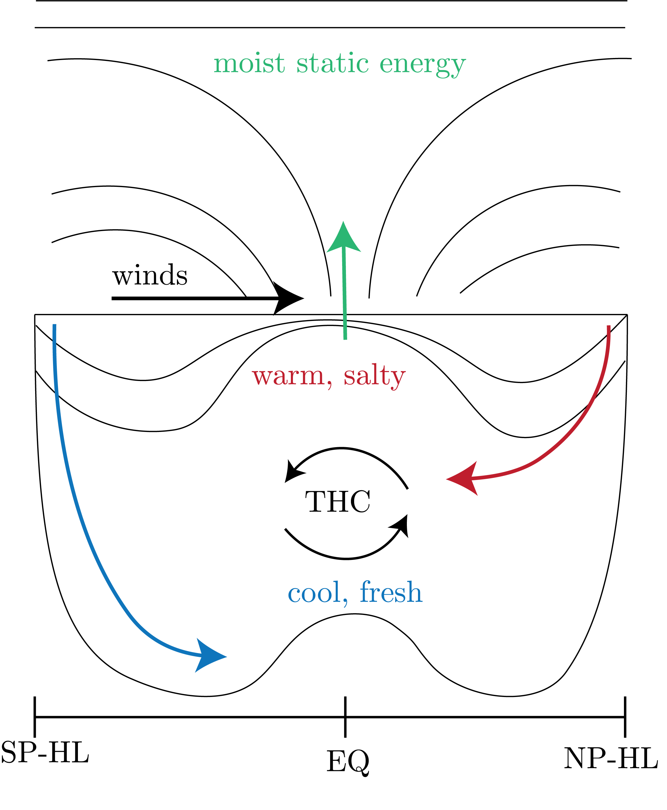
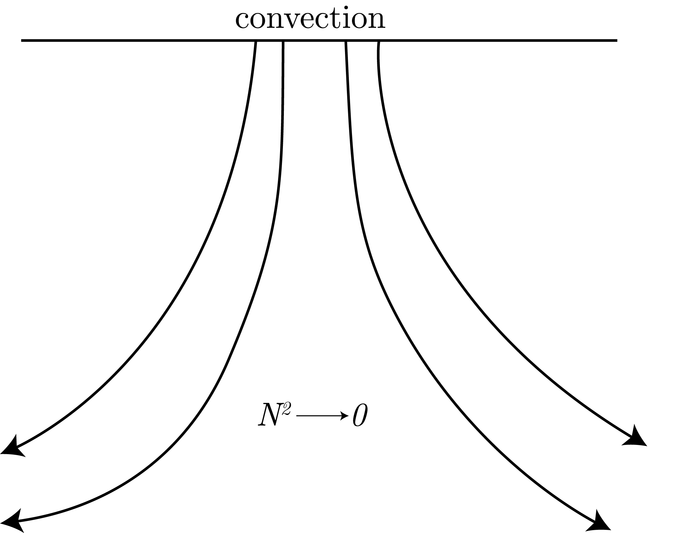
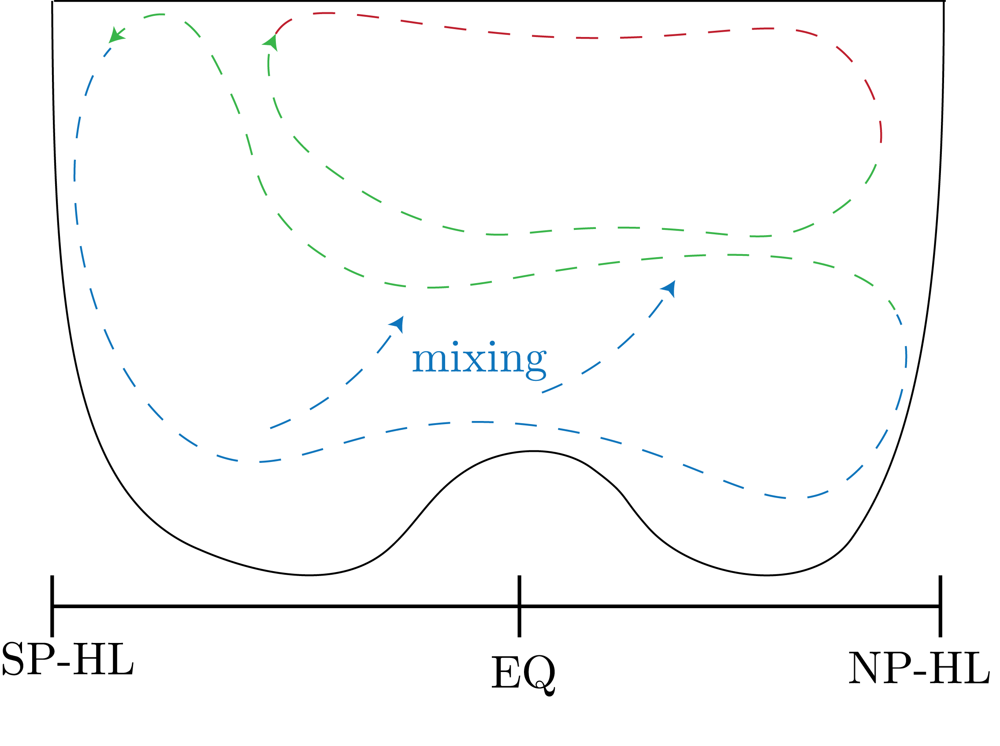
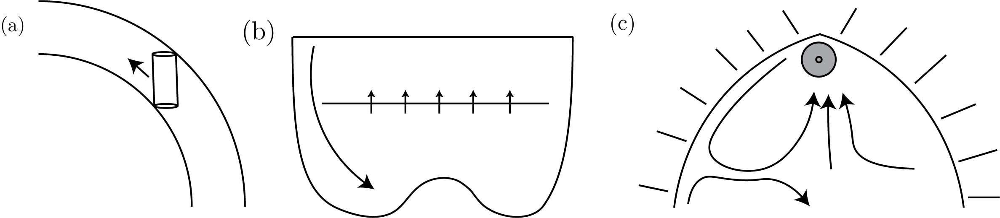
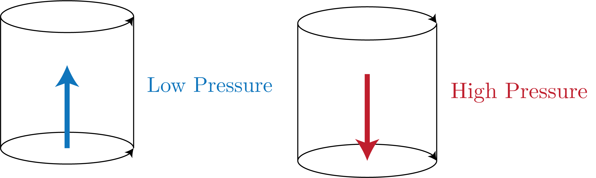

We will be talking about thermohaline circulation, which looks like the diagram presented in Fig. 1

Fig. 1: The Thermohaline Circulation that we will be considering in this lecture.
Observations
We know that $N / f \sim 30$ in the ocean, and a decrease in bouyancy is indicative of deep convection, which we plot in Fig. 2.

Fig. 2: Convection and the effect on $N^2$.
Further, we know that the circulation looks like, in the deep water regions, as presented in Fig. 3.

Fig. 3: Deep water circulation in the ocean. Red is warm water, green is medium temperature, and blue is cool water.
The Theory and Result
Stommel started by saying that if there is downwelling, as presented in Fig. 3 into the deep ocean, there has to be upwelling by mass conservation in order to match this downwelling.
We can think of this as stretching of Taylor columns.
The result was that, as Taylor columns want to have minum stretching (so go North), then we have (for a flat ocean) for Sverdup balance:
\begin{equation}
\beta v = \partial_z w,
\end{equation}
which was integrated to some mid-depth and then we get:
\begin{equation}
\beta \int_{-D}^{\text{mid-depth}} \text{d}z \: v = f w_{\text{mid-depth}} > 0.
\end{equation}
The result, found by Stommel and Aarons in a tank experiment, is presented in Fig. 4.

Fig. 4: This is Stommel-Aarons experiment that shows that the water is moving down the western boundary away from the source region.
(a) The Taylor columns wanting to go north, while (b) Shows the need to balance deep water downwelling. (c) Demonstrates the resulting theory and observation of circulation to balance this circulation.
Now, we can see that this is what only makes intuitive sense.
This is because of the basics in Fig. 5.

Fig. 5: Pressure systems that are used to justify the western boundary movement of water.
To summarize, we see that Taylor column preferentially choose the western boundary, as this will make a Low Pressure system, given the PV rotation of the columns, and then this pumps the water up, as we want.
If it was on the east, then we would make a High Pressure system, causing downwelling which is what we do not want.
Bottom Intensification
We first say that $\partial_z b > 0$.
Then, we see that, with the RHS being diapycnal mixing via the $\kappa$:
\begin{equation}
w N^2 = \partial_z\left[\kappa \partial_z b\right],
\end{equation}
the trick is determining what the $\kappa$ term is.
This is represented by the blue cross arrows in the deep in Fig. 3.